1. Introduction
This threat model covers WebMCP specifications and uses selected implementation evidence where it clarifies the modeled flows. WebMCP is a browser-side API surface that allows a web document to expose page functionality as structured tools that can be discovered and invoked by browser-integrated or in-page agents (for example, PageAgent [PAGEAGENT]). Not every threat in the model originates in WebMCP. The model separates threats inherent to agentic navigation, threats introduced by MCP-style tool mediation, and threats specific to WebMCP.
Note: WebMCP is not a backend MCP deployment. Instead, it brings MCP-like tool interaction into the browser by reusing an existing web application’s functionality and state and exposing that functionality to agents through browser-side mechanisms.
1.1. Terminology
This threat model uses the terminology defined in the WebMCP Terminology section [WEBMCP] and its accompanying explainer [WEBMCP-EXPLAINER].
1.2. Related Work
-
WebMCP [WEBMCP]
-
WebMCP Explainer [WEBMCP-EXPLAINER]
-
Declarative WebMCP API Explainer [WEBMCP-DECLARATIVE-EXPLAINER]
-
WebMCP Self-Review Questionnaire: Security and Privacy [WEBMCP-SPQ]
-
Managing action specific permissions [WEBMCP-ISSUE-44]
-
Chrome WebMCP guide [CHROME-WEBMCP]
-
WebMCP tool security [CHROME-WEBMCP-SECURITY]
-
Agent security considerations for WebMCP [CHROME-AGENT-SECURITY]
-
WebMCP Tool Surface Poisoning: Runtime Manipulation Attacks on LLM Agents [LEE-WEBMCP-POISONING]
-
Breaking Origin Isolation without Breaking the Browser [FERNANDES-WEBMCP-SAMEORIGIN]
-
Agentic Browsing and the Web’s Security Model [AGENTIC-BROWSING-TPAC-2025]
-
Threat Modeling Community Group Meeting Minutes [TMCG-MINUTES-2026-07-14]
1.3. Methodology
This threat model follows the Threat Modeling Guide [THREAT-MODELING-GUIDE]. It begins by modeling the system under analysis and identifying its elements, data flows, and trust boundaries.
Threat elicitation uses STRIDE as a first pass across those elements and flows. PHANTOM-B complements this analysis for threats associated with the LLM-dependent parts of the system.
The model also draws on Threat Model for the Web [THREAT-MODEL-WEB] and its Web Security Model, particularly the concepts of origin, isolation, browser mediation, and untrusted web content.
2. What are we working on?
The L0 views start from the generic high-level Web API diagram in the Threat Model for the Web [THREAT-MODEL-WEB]. The methods-level views add the specification’s WebIDL, methods, and dictionaries.
2.1. Scenario
This threat model considers an agentic Web in which AI agents can navigate and interact with web pages and web applications on a user’s behalf. WebMCP describes two relevant deployment models: an AI agent integrated into the browser, and an author-provided in-page agent implemented in JavaScript, either embedded directly in a page or running in an iframe [WEBMCP] [WEBMCP-EXPLAINER]. Alibaba’s PageAgent [PAGEAGENT] illustrates the latter without being a WebMCP implementation or normative example. It is an in-page JavaScript agent that operates a web interface through the page’s DOM.
WebMCP provides an MCP-like interaction model for a web application. Rather than requiring an agent to infer an action from the rendered interface — for example, by inspecting the DOM or using screenshots to find a product-search control — a page can expose a structured search-products tool with a description and input schema. The agent can discover that tool and invoke it with structured arguments, while the page executes its existing application logic and returns a structured result.
A page can expose this functionality in two ways. The imperative API lets page code register tools directly in JavaScript. The declarative API allows the browser to derive tools from existing HTML forms and standard inputs.
Both mechanisms are intended to make existing web application functionality available to agents without requiring the agent to operate the user interface as a sequence of low-level interactions. The threat model separates three sources of threats:
-
threats inherent to agentic web navigation, independently of WebMCP;
-
threats that arise when an agent uses a web page through an MCP-like tool interface; and
-
threats specific to the WebMCP surface, including tool registration, discovery, invocation, browser mediation, and the declarative and imperative exposure mechanisms.
The categories can overlap, but keeping them separate makes three questions explicit:
-
Which threats may WebMCP reduce?
-
Which threats remain outside WebMCP’s scope?
-
Which new threats may WebMCP introduce?
2.2. L0: High-Level Deployment Views
WebMCP supports two deployment models that place the agent on different sides of the document/origin boundary. Because the placement of PO-03 and TB-03 changes the trust-boundary topology, each deployment is shown as a complete diagram.
2.2.1. Browser-integrated agent

2.2.2. Author-provided in-page agent

Pastel yellow is only a provenance fill: it identifies shapes inherited from the generic Web API L0 model. Unfilled white shapes are WebMCP additions.
The inherited elements are EE-01, EE-02, PO-01, PO-02, TB-01, and TB-02; WebMCP additions are PO-03, DS-01, DS-02, EE-03, and TB-03.
In L0-BI, TB-03 AI Agent Boundary is inside TB-01 and outside TB-02. In L0-IP it is a logical author/agent responsibility boundary inside the TB-02 boundary family. It may collapse into the same-origin page context or correspond to a separate iframe origin; the diagram does not imply a new browser-enforced isolation primitive.
The specification explicitly distinguishes JavaScript in-page agents using ModelContext APIs from the browser’s agent, which uses an implementation-defined observation and internal invocation mechanism [WEBMCP]. No normative WebMCP algorithm creates, mutates, or enters PO-03; it is a deployment actor whose exchanges with browser-controlled algorithms are represented in the DFD.
2.2.3. L0 Elements
| ID | Level | Type | Label | Description | Trust Boundary | Evidence Source |
|---|---|---|---|---|---|---|
| EE-01 | L0 | External Entity | EE-01 User | Person who supplies browser input or navigation intent, can provide a goal to the AI Agent Orchestrator, and receives browser or agent output. | Threat Model for the Web — High-level element dictionary | |
| EE-02 | L0 | External Entity | EE-02 Remote Web Site / Service | Remote Web principal that supplies page resources and runtime responses and receives application requests. | Threat Model for the Web — High-level element dictionary | |
| EE-03 | L0 | External Entity | EE-03 AI Inference Provider | External or separately controlled inference capability used by the AI Agent Orchestrator to interpret goals and produce model outputs or tool-selection decisions. | WebMCP — AI platform [WEBMCP] | |
| PO-01 | L0 | Process | PO-01 Web Browser | Web browser process that mediates generic Web API exchanges and WebMCP registration, tool-state management, invocation, and result routing at L0. | TB-01 | Threat Model for the Web — High-Level Web Threat Model |
| PO-02 | L0 | Process | PO-02 Document / Origin Execution Context | Loaded page and origin-bound execution context that consumes remote resources, performs runtime Web communication, calls Web APIs, exposes tools, and executes page-authored tool behavior. | TB-01; TB-02 | Threat Model for the Web — Sandboxed web-content execution and rendering |
| PO-03 | L0 | Process | PO-03 AI Agent Orchestrator | Agent process that receives a user goal and exposed tools, selects or formulates a tool call, receives the return payload, and produces a final response. | TB-03 | WebMCP — agent, browser’s agent, and page observations [WEBMCP] |
| DS-01 | L0 | Data Store | DS-01 ModelContext Tool Map | Document-associated ModelContext tool-map state containing registered tool definitions across algorithm activations.
| TB-01; TB-02 | WebMCP — model context tool map [WEBMCP] |
| DS-02 | L0 | Data Store | DS-02 Pending Tool Executions Map | Traversable-scoped map of in-flight executeTool() executions containing caller document, target document, tool name, and completion steps. It appears only in L0-IP; browser-agent invocation state is omitted at L0 and introduced as implementation-defined DS-03 in L1-BI.
| TB-01 | WebMCP — Pending tool executions [WEBMCP] |
2.2.4. L0 Trust Boundaries
| ID | Level | Type | Label | Description | Trust Boundary | Source |
|---|---|---|---|---|---|---|
| TB-01 | L0 | Trust Boundary | TB-01 Web User Agent Boundary | Outer Web user-agent boundary containing browser-controlled algorithms, nested document/origin contexts, and the nested agent responsibility boundary represented at L0. | Threat Model for the Web — Trust boundaries | |
| TB-02 | L0 | Trust Boundary | TB-02 Web Context Isolation Boundaries | Retained L0 boundary family for document/origin authority and event-loop execution contexts. | TB-01 | Threat Model for the Web — Sandboxed web-content execution and rendering |
| TB-03 | L0 | Trust Boundary | TB-03 AI Agent Boundary | Logical AI-agent responsibility boundary. It is nested in TB-01 for the browser-integrated view and in TB-02 for the author-provided in-page view; in the latter it is not necessarily a browser-enforced isolation boundary. | TB-01 (browser-integrated); TB-02 (in-page) | WebMCP — agent, browser’s agent, and getTools() [WEBMCP]
|
2.2.5. L0 Data Flows
| ID | Level | Label | From | To | Description | Source |
|---|---|---|---|---|---|---|
| DF-01 | L0 | DF-01 User Input / Navigation | EE-01 | PO-01 | User-supplied navigation intent, interaction, or browser-control input entering browser-controlled processing. | Threat Model for the Web — Browser flows |
| DF-02 | L0 | DF-02 Rendered Output / Browser Mediation | PO-01 | EE-01 | Rendered output, browser UI, status, or mediation presented from browser-controlled processing to the user. | Threat Model for the Web — Browser flows |
| DF-03 | L0 | DF-03 Web Content / Response Data | EE-02 | PO-02 | Page resources, response payloads, and connection data supplied by the remote Web site or service to the document context. | Threat Model for the Web — Browser flows |
| DF-04 | L0 | DF-04 Requests / Submitted Data | PO-02 | EE-02 | Requests, submitted payloads, and connection data sent by the document context to the remote Web site or service. | Threat Model for the Web — Browser flows |
| DF-06 | L0 | DF-06 Web API Result / Event / Error | PO-01 | PO-02 | Generic return value, promise settlement, callback, event, status, or error delivered by browser-controlled API processing to the document context. | Threat Model for the Web — Browser flows |
| DF-07 | L0 | DF-07 Tool Exposure / Registration Request | PO-02 | PO-01 | Page-authored WebMCP tool definition and registration or declarative exposure information sent from the document context to browser-controlled WebMCP processing. | WebMCP — registerTool() [WEBMCP] |
| DF-08 | L0 | DF-08 Registered Tool State | PO-01 | DS-01 | Validated or normalized tool definition state written or updated in the document-scoped tool store. | WebMCP — model context tool map [WEBMCP] |
| DF-09 | L0 | DF-09 Tools Exposed to Agent | DS-01 | PO-03 | Registered tool definitions supplied to the AI Agent Orchestrator through the browser-agent observation path or the in-page getTools() discovery path. | WebMCP — Perform an observation [WEBMCP] |
| DF-10 | L0 | DF-10 Prompt / Goal | EE-01 | PO-03 | User goal, prompt, or constraints supplied to the AI Agent Orchestrator. | WebMCP — agent [WEBMCP] |
| DF-11 | L0 | DF-11 Tool Call | PO-03 | PO-01 | Tool selection and invocation request formulated by the AI Agent Orchestrator and sent to browser-controlled WebMCP processing. | WebMCP — Interaction with agents [WEBMCP] |
| DF-12 | L0 | DF-12 Tool Invocation | PO-01 | PO-02 | Browser-controlled dispatch of the selected tool into the tool-owning document’s imperative callback or declarative target. | WebMCP — tool execute steps [WEBMCP] |
| DF-13 | L0 | DF-13 Tool Output | PO-02 | PO-01 | Page-authored callback result, exception, declarative outcome, or failure returned from the document execution context to browser-controlled WebMCP processing. | WebMCP — imperative execute steps [WEBMCP] |
| DF-14 | L0 | DF-14 Return Payload | PO-01 | PO-03 | Logical tool completion payload returned from browser-controlled WebMCP processing to the AI Agent Orchestrator. | WebMCP — Interaction with agents [WEBMCP] |
| DF-15 | L0 | DF-15 Final Response | PO-03 | EE-01 | Response produced by the AI Agent Orchestrator and presented to the user after tool processing. | WebMCP — agent [WEBMCP] |
| DF-16 | L0 | DF-16 Inference Request / Context | PO-03 | EE-03 | Goal, selected page or tool context, and other implementation-defined inference input supplied by the AI Agent Orchestrator to the inference provider. | WebMCP — AI platform [WEBMCP] |
| DF-17 | L0 | DF-17 Inference Response / Tool Selection | EE-03 | PO-03 | Model output, policy-relevant result, or tool-selection decision returned by the inference provider to the AI Agent Orchestrator. | WebMCP — AI platform [WEBMCP] |
| DF-18 | L0 | DF-18 Pending Execution State Update | PO-01 | DS-02 | L0-IP only: creation, update, completion removal, cancellation removal, or cleanup removal of an entry in the traversable-scoped pending tool executions map. | WebMCP — Pending tool executions [WEBMCP] |
| DF-19 | L0 | DF-19 Pending Execution State / Lookup | DS-02 | PO-01 | L0-IP only: lookup, scan, or selection of pending execution state used by executeTool() completion, cancellation, and document-unloading cleanup.
| WebMCP — Pending tool executions [WEBMCP] |
2.3. L1: Methods-Level Deployment Views
The L1 views use different invocation paths:
-
The author-provided in-page agent uses
getTools()to discover tools andexecuteTool()to invoke them. ItsexecuteTool()path uses the specification’s traversable-scoped pending tool executions map and unloading cleanup. -
The browser-integrated agent receives observations and invokes tools through a browser-controlled adapter.
Registration and registered-tool state are shared.
2.3.1. Browser-integrated agent

2.3.2. Author-provided in-page agent

2.3.3. L1 Elements
| ID | Level | Type | Label | Description | Trust Boundary | Evidence Source |
|---|---|---|---|---|---|---|
| DS-01 | L1 | Data Store | DS-01 ModelContext Tool Map | Document-associated ModelContext tool-map state containing registered tool definitions across algorithm activations.
| TB-01; TB-02 | WebMCP — model context tool map [WEBMCP] |
| DS-02 | L1 | Data Store | DS-02 Pending Tool Executions Map | Specification-defined traversable-scoped state for in-page executeTool() invocations and unloading cleanup. It appears only in L1-IP and is distinct from Chromium Actor state.
| TB-01 | WebMCP — Pending tool executions [WEBMCP] |
| DS-03 | L1 | Data Store | DS-03 Browser-agent Invocation State | Implementation-defined Chromium Actor state for an in-flight browser-agent ScriptTool invocation, including lifecycle, callback, execution identity, target document, and timeout state. It is distinct from the specification’s traversable-scoped pending tool executions map. | TB-01 | Chromium ScriptTool invocation state setup and cancellation lifecycle [CHROMIUM-5E23C6A] |
| PO-01.1 | L1 | Process | PO-01.1 registerTool | Named ModelContext registration algorithm promoted as a candidate process without expanding its numbered steps. | TB-01 | WebMCP — registerTool() [WEBMCP] |
| PO-01.2 | L1 | Process | PO-01.2 getTools | Named discovery algorithm that traverses eligible documents, applies policy and exposure rules, constructs RegisteredTool values, sorts them, and settles the caller promise. | TB-01 | WebMCP — getTools() [WEBMCP] |
| PO-01.3 | L1 | Process | PO-01.3 executeTool | Named in-page invocation algorithm that validates caller and target context, creates pending execution state, dispatches execution, and settles the caller promise. | TB-01 | WebMCP — executeTool() [WEBMCP] |
| PO-01.7 | L1 | Process | PO-01.7 Unloading Document Cleanup | In-page deployment algorithm that removes or completes specification-defined pending executeTool() executions associated with a destroyed caller or target document. It appears only in L1-IP.
| TB-01 | WebMCP — Pending tool executions [WEBMCP] |
| PO-01.8 | L1 | Process | PO-01.8 Perform an Observation | Named non-normative example algorithm that constructs a document-keyed tool map and exposes the observation to the browser agent through an implementation-defined mechanism. | TB-01 | WebMCP — Perform an observation [WEBMCP] |
| PO-01.9 | L1 | Process | PO-01.9 Document.modelContext Getter | Named Web API entry algorithm that returns the Document’s associated ModelContext object without expanding its internal step. | TB-01 | WebMCP — Document.modelContext [WEBMCP] |
| PO-01.10 | L1 | Process | PO-01.10 Browser-agent Invocation Adapter | Implementation-defined browser-controlled path that accepts a browser-agent tool call, dispatches it to the tool-owning document, and returns completion or failure. | TB-01 | WebMCP — Interaction with agents [WEBMCP]; Chromium feature-gated Actor-to-ScriptTool integration test and renderer dispatch adapter [CHROMIUM-5E23C6A] |
| PO-02 | L1 | Process | PO-02 Document / Origin Execution Context | Loaded page and origin-bound execution context that consumes remote resources, performs runtime Web communication, calls Web APIs, exposes tools, and executes page-authored tool behavior. | TB-01; TB-02 | Threat Model for the Web — Sandboxed web-content execution and rendering |
| PO-03 | L1 | Process | PO-03 AI Agent Orchestrator | Agent process that receives a user goal and exposed tools, selects or formulates a tool call, receives the return payload, and produces a final response. | TB-03 | WebMCP — agent, browser’s agent, and page observations [WEBMCP] |
2.3.4. L1 Trust Boundaries
| ID | Level | Type | Label | Description | Trust Boundary | Source |
|---|---|---|---|---|---|---|
| TB-01 | L1 | Trust Boundary | TB-01 Web User Agent Boundary | Outer Web user-agent boundary containing browser-controlled algorithms, nested document/origin contexts, and the nested agent responsibility boundary represented in each deployment view. | Threat Model for the Web — Trust boundaries | |
| TB-02 | L1 | Trust Boundary | TB-02 Web Context Isolation Boundaries | Retained L0 boundary family for document/origin authority and event-loop execution contexts. | TB-01 | Threat Model for the Web — Sandboxed web-content execution and rendering |
| TB-03 | L1 | Trust Boundary | TB-03 AI Agent Boundary | Logical AI-agent responsibility boundary. It is nested in TB-01 for the browser-integrated view and in TB-02 for the author-provided in-page view; in the latter it is not necessarily a browser-enforced isolation boundary. | TB-01 (browser-integrated); TB-02 (in-page) | WebMCP — agent, browser’s agent, and getTools() [WEBMCP]
|
2.3.5. L1 Data Flows
| ID | Level | Label | From | To | Description | Source |
|---|---|---|---|---|---|---|
| DF-05.1 | L1 | DF-05.1 Discovery Request / fromOrigins | PO-03 | PO-01.2 | Macro getTools() request from an author-provided agent running as script in the caller document or iframe, carrying optional origin filtering; validation and iteration are defined by the referenced getTools() algorithm. | WebMCP — getTools() [WEBMCP] |
| DF-05.2 | L1 | DF-05.2 ModelContext Access | PO-02 | PO-01.9 | Access to Document.modelContext that invokes the named getter algorithm. | WebMCP — Document.modelContext [WEBMCP] |
| DF-05.3 | L1 | DF-05.3 Document Lifecycle Trigger | PO-02 | PO-01.7 | Document destruction or unloading input that activates the cleanup entry algorithm; pending-map mechanics are defined by the referenced cleanup algorithm. | WebMCP — Pending tool executions [WEBMCP] |
| DF-05.4 | L1 | DF-05.4 In-page Tool Call | PO-03 | PO-01.3 | Macro executeTool() request from an author-provided agent running as script in the caller document or iframe. | WebMCP — executeTool() [WEBMCP] |
| DF-06.6 | L1 | DF-06.6 Associated ModelContext | PO-01.9 | PO-02 | The same associated ModelContext object returned by the getter algorithm. | WebMCP — associated ModelContext [WEBMCP] |
| DF-06.7 | L1 | DF-06.7 Cleanup Cancellation / Completion | PO-01.7 | PO-02 | Macro cancellation or completion effect delivered to the affected page after unloading cleanup; pending-map iteration is defined by the referenced cleanup algorithm. | WebMCP — Pending tool executions [WEBMCP] |
| DF-06.8 | L1 | DF-06.8 RegisteredTool Sequence | PO-01.2 | PO-03 | Macro getTools() result delivered to the author-provided in-page agent; traversal, exposure filtering, dictionary construction, sorting, and settlement are defined by the referenced getTools() algorithm. | WebMCP — getTools() [WEBMCP] |
| DF-06.9 | L1 | DF-06.9 In-page Return Payload | PO-01.3 | PO-03 | Macro executeTool() completion delivered to the author-provided in-page agent; completion and error branches are defined by the referenced executeTool() and tool-execute algorithms. | WebMCP — executeTool() [WEBMCP] |
| DF-07.1 | L1 | DF-07.1 Tool Definition / Options | PO-02 | PO-01.1 | ModelContextTool and ModelContextRegisterToolOptions are supplied by the document context. | WebMCP — registerTool() [WEBMCP] |
| DF-08.1 | L1 | DF-08.1 Registered Tool State Write | PO-01.1 | DS-01 | Registered tool definition written by registerTool() to the document-scoped tool map. | WebMCP — registerTool() [WEBMCP] |
| DF-08.4 | L1 | DF-08.4 Registered Tool State Read | DS-01 | PO-01.2 | Registered tool state read by getTools(); this is the read half of L0 registered-tool-state exchange DF-08. | WebMCP — getTools() [WEBMCP] |
| DF-09.5 | L1 | DF-09.5 Tool Definitions for Observation | DS-01 | PO-01.8 | Document tool definitions gathered into the observation’s document-keyed tool map. | WebMCP — Perform an observation [WEBMCP] |
| DF-09.6 | L1 | DF-09.6 Observation Tool Map | PO-01.8 | PO-03 | Implementation-defined observation handoff containing at least the browser-agent tool map. | WebMCP — observation tool map [WEBMCP] |
| DF-11.1 | L1 | DF-11.1 Browser-agent Tool Call | PO-03 | PO-01.10 | Tool name and structured arguments selected by the browser-integrated agent and passed to the browser-controlled invocation adapter. | WebMCP — Interaction with agents [WEBMCP]; Chromium Actor tool call and result test [CHROMIUM-5E23C6A] |
| DF-12.1 | L1 | DF-12.1 Browser-agent Tool Dispatch | PO-01.10 | PO-02 | Browser-controlled dispatch of the selected tool and arguments to the tool-owning document. | WebMCP — tool execute steps [WEBMCP]; Chromium renderer dispatch adapter [CHROMIUM-5E23C6A] |
| DF-12.2 | L1 | DF-12.2 In-page Target Tool Dispatch | PO-01.3 | PO-02 | Dispatch from executeTool() to the selected tool-owning document after caller, target, origin, and exposure checks. | WebMCP — executeTool() and tool execute steps [WEBMCP] |
| DF-13.1 | L1 | DF-13.1 Browser-agent Tool Output / Failure | PO-02 | PO-01.10 | Tool result, exception, declarative outcome, or failure returned to the browser-controlled invocation adapter. | WebMCP — tool execute steps [WEBMCP] |
| DF-13.2 | L1 | DF-13.2 In-page Tool Output / Failure | PO-02 | PO-01.3 | Tool result or failure returned from the tool-owning document to executeTool(). | WebMCP — executeTool() [WEBMCP] |
| DF-14.1 | L1 | DF-14.1 Browser-agent Return Payload | PO-01.10 | PO-03 | Completion status and result returned to the browser-integrated agent. | WebMCP — Interaction with agents [WEBMCP]; Chromium adapter and result probes [CHROMIUM-5E23C6A] |
| DF-18.1 | L1 | DF-18.1 Pending Execution State Update | PO-01.3 | DS-02 | executeTool() creates the pending-execution entry and its completion steps remove the entry after success or failure.
| WebMCP — executeTool() [WEBMCP] |
| DF-18.2 | L1 | DF-18.2 Cleanup State Removal | PO-01.7 | DS-02 | Unloading-document cleanup removes pending entries whose caller or target document is being unloaded and invokes failed completion where required. | WebMCP — Pending tool executions [WEBMCP] |
| DF-18.3 | L1 | DF-18.3 Browser-agent Invocation State Update | PO-01.10 | DS-03 | Creation or transition of implementation-defined Chromium Actor state for a browser-agent-initiated ScriptTool invocation. | Chromium ScriptToolHost invocation and lifecycle state [CHROMIUM-5E23C6A] |
| DF-19.1 | L1 | DF-19.1 Pending Execution State / Lookup | DS-02 | PO-01.3 | executeTool() completion checks whether the keyed pending execution still exists before removing it and settling the caller promise.
| WebMCP — executeTool() [WEBMCP] |
| DF-19.2 | L1 | DF-19.2 Cleanup State Scan | DS-02 | PO-01.7 | Unloading-document cleanup scans and selects pending executions associated with the unloading caller or target document. | WebMCP — Pending tool executions [WEBMCP] |
| DF-19.3 | L1 | DF-19.3 Browser-agent Invocation State / Lookup | DS-03 | PO-01.10 | Implementation-defined Chromium Actor lifecycle, target, callback, and timeout state read by the browser-agent invocation path. | Chromium ScriptToolHost lifecycle and cancellation [CHROMIUM-5E23C6A] |
2.3.6. Mapping
| L0 element or exchange | L1 representation | Deployment relationship |
|---|---|---|
PO-01 Web Browser
| PO-01.1, PO-01.2, PO-01.3, PO-01.7, PO-01.8, PO-01.9, and PO-01.10
| Shared browser processing is decomposed; getTools()/executeTool() are in-page, while observation/browser-agent invocation are browser-integrated.
|
PO-02, PO-03, DS-01, DS-02
| PO-02, PO-03, and DS-01 retain their IDs in both views; DS-02 is retained only in L1-IP, while implementation-defined DS-03 is introduced only in L1-BI.
| PO-03 changes boundary placement. The specification’s pending map and Chromium Actor invocation state remain separate deployment-specific stores.
|
TB-01, TB-02, TB-03
| Retained with the same IDs | TB-03 is nested in TB-01 for browser-integrated views and in TB-02 for in-page views.
|
DF-07 and DF-08
| DF-07.1, DF-08.1, and DF-08.4
| Registration is shared; the store read is used by the relevant discovery or observation path. |
DF-09
| L1-BI: DF-09.5/DF-09.6; L1-IP: DF-05.1/DF-06.8 with DF-08.4
| Observation for the browser agent; direct API discovery for the in-page agent. |
DF-11 through DF-14
| L1-BI: DF-11.1, DF-12.1, DF-13.1, DF-14.1; L1-IP: DF-05.4, DF-12.2, DF-13.2, DF-06.9
| Browser-controlled adapter versus page-facing executeTool().
|
DF-18 and DF-19
| DF-18.1/DF-19.1 and DF-18.2/DF-19.2 use DS-02; implementation-specific DF-18.3/DF-19.3 use DS-03
| The specification’s in-page execution and cleanup state is kept distinct from Chromium Actor browser-agent invocation state. |
2.4. What can go wrong?
The threat table records findings from the data-flow diagrams.
| ID | Applicability | What can go wrong | L0 Elements / DFs | L1 Elements / DFs | Security Considerations status | Current DFD coverage | Evidence source |
|---|---|---|---|---|---|---|---|
T-01
| MCP-style tool mediation; WebMCP-specific | Page-authored tool metadata injects instructions or misleading semantics into agent context. | Elements: PO-02, PO-01, DS-01, PO-03 DFs: DF-07, DF-08, DF-09
| Elements: PO-02, PO-01.1, DS-01, PO-01.2, PO-01.8, PO-03 DFs: registration DF-07.1, DF-08.1; in-page discovery DF-08.4, DF-05.1, DF-06.8; browser observation DF-09.5, DF-09.6
| Tracked — explicit metadata/description attack section. | Direct at L0 and in both L1 deployment views. | Spec: metadata/description attacks [WEBMCP]; Chromium: tool observation assembly and declarative schema construction [CHROMIUM-5E23C6A]; GitHub: security and privacy questionnaire; blog/report: Paz 2026 |
T-02
| MCP-style tool mediation; WebMCP-specific | Untrusted tool output is treated as instructions and changes subsequent agent behavior. | Elements: PO-02, PO-01, PO-03 DFs: DF-13, DF-14
| Elements: PO-02, PO-03, PO-01.3, PO-01.10 DFs: in-page DF-12.2, DF-13.2, DF-06.9; browser-integrated DF-12.1, DF-13.1, DF-14.1
| Modify — output injection is explicit, but the page-authored hint should be identified as advisory rather than enforcement. | Direct in both L1 deployment views through the executeTool() and browser-agent invocation result paths.
| Spec: output injection [WEBMCP] and untrusted response annotation [WEBMCP]; Chromium: tool-result handoff and observation handoff [CHROMIUM-5E23C6A]; GitHub: security and privacy questionnaire; blog/report: Paz 2026 |
T-03
| Agentic navigation; WebMCP-specific | A consequential action bypasses or diverges from the normal human-facing UI path. | Elements: EE-01, PO-03, PO-01, PO-02, EE-02 DFs: DF-11, DF-12, DF-04
| Elements:PO-03, PO-02, PO-01.3, PO-01.10DFs: in-page: DF-05.4, DF-12.2browser-integrated: DF-11.1, DF-12.1
| Modify — intent mismatch is explicit; add user-mediation and side-effect semantics across invocation paths. | Partial: target execution and user mediation are represented by the tool-execute and declarative-execution algorithms; the remote service effect remains an L0 concern. | Spec: misrepresentation of intent [WEBMCP] and ambiguous finalization [WEBMCP]; Chromium: declarative execution entry and user-mediation and autosubmit branch [CHROMIUM-5E23C6A]; GitHub: issue #44 |
T-04
| Agentic navigation; MCP-style tool mediation; WebMCP-specific | An over-parameterized tool causes unnecessary disclosure of user or contextual data. | Elements: PO-02, PO-01, DS-01, PO-03, EE-03 DFs: DF-07, DF-08, DF-09, DF-16
| Elements: PO-02, PO-01.1, DS-01, PO-01.2, PO-01.8, PO-03 DFs: registration DF-07.1, DF-08.1; in-page discovery DF-08.4, DF-05.1, DF-06.8; browser observation DF-09.5, DF-09.6
| Tracked — explicit over-parameterization section. | Direct through exposure to the agent in both L1 deployment views; disclosure to the inference provider is visible only at L0. | Spec: over-parameterization [WEBMCP]; Chromium: schema generation for selectable values and control-type classification used for schema construction [CHROMIUM-5E23C6A]; GitHub: security and privacy questionnaire |
T-05
| Agentic navigation (WebMCP delivery) | A provider retains or reuses metadata, arguments, results, or context beyond the user-origin interaction. | Elements: PO-03, EE-03, TB-03 DFs: DF-16, DF-17; ingress via DF-09, DF-14
| Elements: PO-03, TB-03, PO-01.2, PO-01.3, PO-01.8, PO-01.10 DFs: in-page DF-05.1, DF-06.8, DF-05.4, DF-06.9; browser-integrated DF-09.6, DF-11.1, DF-14.1
| Add — provider transport, retention, memory, and responsibility boundaries are not addressed. | Direct at L0; L1 shows metadata, calls, and results crossing the agent boundary in both deployments, but not provider transport or retention. | Model/DFD inference; spec: agent baseline [WEBMCP] and over-parameterization [WEBMCP]; vendor guidance: agent security; blog/report: Paz 2026 |
T-06
| WebMCP-specific | A tool is discovered or executed by an unintended document or origin. | Elements: PO-02, PO-01, DS-01, TB-02 DFs: DF-06, DF-07, DF-08, DF-12, DF-13
| Elements: PO-02, PO-03, PO-01.1, PO-01.2, PO-01.3, PO-01.8, PO-01.10, DS-01, TB-02 DFs: registration DF-07.1, DF-08.1; in-page discovery/invocation DF-05.1, DF-08.4, DF-06.8, DF-05.4, DF-12.2, DF-13.2, DF-06.9; browser observation/invocation DF-09.5, DF-09.6, DF-11.1, DF-12.1, DF-13.1, DF-14.1
| Modify — the same-origin section is still a TODO; cover origin-wide delegation and frame or tenant-confused-deputy cases. | Partial: the macro origin/context checks are visible; caller/target selection and exposure gates are defined by getTools(), executeTool(), and the tool-exposure algorithm.
| Spec: exposed origins [WEBMCP] and same-origin boundaries [WEBMCP]; Chromium: discovery and exposure checks, remote execution selection, and cross-origin-child WPT [CHROMIUM-5E23C6A]; GitHub: security and privacy questionnaire; blog: Fernandes 2026 |
T-07
| Agentic navigation; WebMCP-specific | Missing or ambiguous provenance causes a tool or invocation to be attributed to the wrong document, frame, origin, or party. | Elements: PO-02, PO-01, DS-01, DS-02, PO-03 DFs: DF-09, DF-11, DF-12, DF-18, DF-19
| Elements: PO-02, PO-03, PO-01.2, PO-01.3, PO-01.8, PO-01.10, DS-01, DS-02, DS-03 DFs: in-page DF-08.4, DF-05.1, DF-06.8, DF-05.4, DF-12.2, DF-13.2, DF-06.9, DF-18.1, DF-19.1; browser-integrated DF-09.5, DF-09.6, DF-11.1, DF-12.1, DF-13.1, DF-14.1, DF-18.3, DF-19.3
| Add — atomic provenance across observation, discovery, invocation, and user or agent UI is not addressed. | Direct at the macro DFD level in both deployments: discovery or observation, invocation, target dispatch, result routing, and pending execution state are visible; atomic provenance checks remain algorithm- and implementation-specific. | Spec: page observations [WEBMCP] and misrepresentation of intent [WEBMCP]; Chromium: DevTools protocol provenance fields and handler-side frame and origin handling [CHROMIUM-5E23C6A]; vendor guidance: agent security; blog: Fernandes 2026 |
T-08
| MCP-style tool mediation; WebMCP-specific | The tool map changes between observation, discovery, and invocation, producing stale or name-confused behavior. | Elements: PO-02, PO-01, DS-01, DS-02, PO-03 DFs: DF-07, DF-08, DF-09, DF-11, DF-12, DF-18, DF-19
| Elements: PO-02, PO-03, PO-01.1, PO-01.2, PO-01.3, PO-01.7, PO-01.8, PO-01.10, DS-01, DS-02, DS-03 DFs: registration DF-07.1, DF-08.1; in-page discovery/invocation/lifecycle DF-08.4, DF-05.1, DF-06.8, DF-05.4, DF-12.2, DF-05.3, DF-06.7, DF-18.1, DF-19.1, DF-18.2, DF-19.2; browser observation/invocation DF-09.5, DF-09.6, DF-11.1, DF-12.1, DF-18.3, DF-19.3
| Add — freshness, generation binding, replacement, abort, and navigation lifecycle are not addressed. | Direct at macro lifecycle and pending-state level; ordering and race mechanics are defined by registerTool(), unregistration, cleanup, and tool-execution algorithms.
| Paper: Lee et al. 2026; spec: registerTool() signal steps [WEBMCP]
|
T-09
| WebMCP-specific | Abort, navigation, unregister, or unload rejects the caller but fails to cancel target work or effects. | Elements: PO-02, PO-01, DS-02, TB-02 DFs: DF-12, DF-13, DF-06, DF-18, DF-19
| Elements: PO-02, PO-03, PO-01.3, PO-01.7, PO-01.10, DS-02, DS-03 DFs: in-page DF-05.4, DF-12.2, DF-13.2, DF-06.9, DF-05.3, DF-06.7, DF-18.1, DF-19.1, DF-18.2, DF-19.2; browser-integrated DF-11.1, DF-12.1, DF-13.1, DF-14.1, DF-18.3, DF-19.3
| Add — caller-to-target cancellation and residual target effects are not addressed. | Direct at the macro state-lifecycle level; cancellation races, abort propagation, and residual target effects require the executeTool(), cleanup, and implementation-specific cancellation paths.
| Spec: unregister a tool [WEBMCP]; Chromium: renderer cancellation and pending-execution cleanup [CHROMIUM-5E23C6A] |
T-10
| Agentic navigation; MCP-style tool mediation; WebMCP-specific | Unbounded tools, metadata, observations, or pending calls exhaust browser, agent-context, provider, or user-attention resources. | Elements: PO-02, PO-01, DS-01, DS-02, PO-03, EE-03 DFs: DF-07, DF-08, DF-09, DF-11, DF-16, DF-18, DF-19
| Elements: PO-02, PO-03, PO-01.1, PO-01.2, PO-01.3, PO-01.8, PO-01.10, DS-01, DS-02, DS-03 DFs: registration DF-07.1, DF-08.1; in-page DF-08.4, DF-05.1, DF-06.8, DF-05.4, DF-18.1, DF-19.1; browser-integrated DF-09.5, DF-09.6, DF-11.1, DF-18.3, DF-19.3
| Modify — an input-length mitigation exists; extend it to counts, sizes, pending calls, timeouts, and context pressure. | Direct for registration, discovery, observation, and pending-execution accumulation; quota and bound enforcement remain algorithm- or implementation-specific concerns. | Spec and implementation/resource analysis: maximum input lengths [WEBMCP]; paper: Cui and Zuo 2025; vendor guidance: WebMCP tool security |
T-11
| WebMCP-specific | Imperative execution accepts arguments that do not conform to the advertised input schema, or returns values without a declared output schema. | Elements: PO-02, PO-01, DS-01 DFs: DF-07, DF-08, DF-09, DF-12, DF-13
| Elements: PO-02, PO-03, PO-01.1, PO-01.2, PO-01.3, PO-01.8, PO-01.10, DS-01 DFs: registration/discovery DF-07.1, DF-08.1, DF-08.4, DF-06.8, DF-09.5, DF-09.6; in-page invocation/result DF-05.4, DF-12.2, DF-13.2, DF-06.9; browser-integrated invocation/result DF-11.1, DF-12.1, DF-13.1, DF-14.1
| Add — imperative input-schema validation responsibility, root-type mismatch, and the absence or scope of an output schema are not addressed. | Partial: input-schema-bearing paths are visible; input validation, callback execution, and output-schema handling are assessed against registerTool(), getTools(), executeTool(), and the imperative execute steps.
| Pinned-snapshot IDL divergence, resolved by merged CL 8248081; input-schema enforcement and output-schema gaps remain. Spec: input schema [WEBMCP]; Chromium: imperative argument parsing and callback invocation, tool contract [CHROMIUM-5E23C6A]; external standard: JSON Schema 2020-12 |
T-12
| WebMCP-specific | Declarative schema generation, field filling, validation, and form behavior disagree. | Elements: PO-02, PO-01, DS-01 DFs: DF-07, DF-08, DF-12, DF-13
| Elements: PO-02, PO-03, PO-01.1, PO-01.3, PO-01.10, DS-01 DFs: registration DF-07.1, DF-08.1; in-page invocation/result DF-05.4, DF-12.2, DF-13.2, DF-06.9; browser-integrated invocation/result DF-11.1, DF-12.1, DF-13.1, DF-14.1
| Add — declarative schema synthesis and filling security and privacy behavior is not yet covered. | Partial: the declarative helper and field-level mechanics are defined by the schema-synthesis, field-filling, validation, and declarative-execution algorithms. | Spec: Declarative WebMCP [WEBMCP] and schema synthesis [WEBMCP]; Chromium: schema synthesis; tests: invalid-input and transactional-fill tests and schema-generation tests [CHROMIUM-5E23C6A]; GitHub: security and privacy questionnaire |
T-13
| WebMCP-specific | toolautosubmit creates a consequential effect without adequate user mediation.
| Elements: EE-01, PO-03, PO-01, PO-02, EE-02 DFs: DF-11, DF-12, DF-04
| Elements:PO-03, PO-02, PO-01.3, PO-01.10DFs: in-page: DF-05.4, DF-12.2browser-integrated: DF-11.1, DF-12.1
| Modify — ambiguous finalization is tracked; add explicit autosubmit and pre-invocation mediation semantics. | Partial: L1 shows both invocation shells; autosubmit and mediation semantics are defined by the declarative execute steps and the L0 remote-effect path. | Spec: Declarative WebMCP [WEBMCP] and ambiguous finalization [WEBMCP]; Chromium: declarative execution entry and user-mediation and autosubmit branch [CHROMIUM-5E23C6A]; GitHub: issue #44 |
T-14
| WebMCP-specific (Chromium test-only path) | Automated filling or execution of a file input bypasses the file picker or equivalent user choice. | Elements: EE-01, PO-01, PO-02, EE-02 DFs: DF-12, DF-04
| Elements:PO-03, PO-02, PO-01.3, PO-01.10DFs: in-page: DF-05.4, DF-12.2browser-integrated: DF-11.1, DF-12.1
| Add before shipping — file selection, path probing, and autosubmit need dedicated privacy and security treatment. | Partial: the relevant field-filling path is implementation/test evidence and is not explicit in L1. | Spec: Declarative WebMCP [WEBMCP]; Chromium: test-only feature gate and file-input fill path [CHROMIUM-5E23C6A] |
T-15
| WebMCP-specific (Chromium experimental path) | A custom element receives unvalidated JSON or values outside its intended contract. | Elements: PO-02, PO-01 DFs: DF-12, DF-13
| Elements: PO-03, PO-02, PO-01.3, PO-01.10 DFs: in-page DF-05.4, DF-12.2, DF-13.2, DF-06.9; browser-integrated DF-11.1, DF-12.1, DF-13.1, DF-14.1
| Add before shipping — custom-element schema enforcement or advisory semantics need coverage. | Partial: element-specific conversion and callback mechanics are defined by the declarative custom-element validation and callback path. | Spec: Declarative WebMCP [WEBMCP]; Chromium: validation TODO and unconditional acceptance and custom-element JSON handoff [CHROMIUM-5E23C6A]; vendor guidance: WebMCP tool security |
T-16
| WebMCP-specific | Result extraction returns unrelated JSON-LD or page content as the tool result. | Elements: PO-02, PO-01, PO-03 DFs: DF-13, DF-14
| Elements: PO-02, PO-03, PO-01.3, PO-01.10 DFs: in-page DF-13.2, DF-06.9; browser-integrated DF-13.1, DF-14.1
| Add — result-extraction scope and minimization are not addressed. | Partial: extraction is defined by the declarative result-extraction behavior; the result-to-agent path is now visible in both L1 deployment views. | Spec: Declarative WebMCP [WEBMCP] and over-parameterization [WEBMCP]; Chromium: declarative result extraction [CHROMIUM-5E23C6A]; GitHub: security and privacy questionnaire |
T-17
| Agentic navigation (WebMCP deployment) | Regular and private browsing contexts become linkable through agent or provider state. | Elements: EE-01, PO-03, EE-03, TB-02, TB-03 DFs: DF-09, DF-14, DF-16, DF-17
| Elements: PO-03, PO-01.2, PO-01.3, PO-01.8, PO-01.10, DS-01, TB-02, TB-03 DFs: in-page DF-05.1, DF-08.4, DF-06.8, DF-06.9; browser-integrated DF-09.5, DF-09.6, DF-14.1
| Tracked — explicit private-browsing section. | Partial: context separation is modeled, but agent memory, provider state, and their partitioning are absent from L1. | Model/DFD inference; spec: private browsing interaction [WEBMCP]; GitHub: security and privacy questionnaire; vendor guidance: agent security |
T-18
| WebMCP-specific | File or opaque-origin cases are interpreted inconsistently, weakening origin-based authority checks. | Elements: PO-02, PO-01, DS-01, TB-02 DFs: DF-06, DF-07, DF-08, DF-12, DF-13
| Elements: PO-02, PO-03, PO-01.1, PO-01.2, PO-01.3, PO-01.8, PO-01.10, DS-01, TB-02 DFs: registration DF-07.1, DF-08.1; in-page discovery/invocation DF-05.1, DF-08.4, DF-06.8, DF-05.4, DF-12.2, DF-13.2, DF-06.9; browser observation/invocation DF-09.5, DF-09.6, DF-11.1, DF-12.1, DF-13.1, DF-14.1
| Add — local-file and opaque-origin principal, discovery, lifecycle, and disclosure semantics are not addressed. | Direct at macro origin/context level; parse and rejection branches are defined by the registration, discovery, and execution algorithms. | Spec/implementation analysis: registerTool() [WEBMCP]; Chromium file-origin code [CHROMIUM-0E5CA7C]
|
T-19
| Agentic navigation; WebMCP-specific | The system cannot establish who requested, authorized, performed, or observed an action. | Elements: EE-01, PO-03, PO-01, PO-02, EE-02, DS-02 DFs: DF-10, DF-11, DF-12, DF-13, DF-14, DF-04, DF-18, DF-19
| Elements: PO-02, PO-03, PO-01.3, PO-01.10, DS-02, DS-03 DFs: in-page DF-05.4, DF-12.2, DF-13.2, DF-06.9, DF-18.1, DF-19.1; browser-integrated DF-11.1, DF-12.1, DF-13.1, DF-14.1, DF-18.3, DF-19.3
| Modify — intent and blame are discussed; add request, authorization, actor, and effect attribution. | Partial: L1 exposes caller, target, and tool-name execution state, but not the complete request-to-effect chain, authorization evidence, or durable audit state. | Spec/model/implementation analysis: misrepresentation of intent [WEBMCP]; GitHub: issue #44 |
T-20
| WebMCP-specific | Coarse or conflated errors hide security-relevant causes and impede safe recovery or diagnosis. | Elements: PO-02, PO-01, PO-03, DS-02 DFs: DF-06, DF-13, DF-14, DF-18, DF-19
| Elements: PO-02, PO-03, PO-01.3, PO-01.7, PO-01.10, DS-02, DS-03 DFs: in-page result/lifecycle DF-13.2, DF-06.9, DF-06.7, DF-18.1, DF-19.1, DF-18.2, DF-19.2; browser-integrated result/lifecycle DF-13.1, DF-14.1, DF-18.3, DF-19.3
| Add — error taxonomy, diagnosability, and safe recovery are not addressed. | Partial: pending-state completion and cleanup are visible; detailed rejection and error-cause branches are defined by executeTool(), tool-execute, and cleanup algorithms.
| Spec: current gaps [WEBMCP] and ModelContext interface [WEBMCP]; Chromium: completion error transport and renderer error collapsing [CHROMIUM-5E23C6A] |
T-21
| WebMCP-specific (privileged Chromium tooling) | Sensitive arguments, results, or context leak through DevTools or diagnostic surfaces. | Elements: PO-01, PO-02, TB-01 as architectural context only DFs: —
| Elements: — DFs: — | Implementation-specific — no specification change is proposed unless diagnostic surfaces become part of WebMCP scope. | Model gap: the diagnostic actor/process and diagnostic data flows are absent; nearby execution flows are not substitutes. | Implementation-specific Chromium Inspector/probe path: invocation, result, and failure [CHROMIUM-5E23C6A]. This is a privileged path and does not demonstrate unprivileged access, log persistence, or an exploitable vulnerability; the spec Security and Privacy section [WEBMCP] is contextual only. |
T-22
| MCP-style tool mediation; WebMCP-specific | A compromised or unexpected third-party page script mutates the tool surface within the page’s existing authority. | Elements: EE-02, PO-02, PO-01, DS-01, PO-03 DFs: DF-03, DF-07, DF-08, DF-09
| Elements: PO-02, PO-01.1, DS-01, PO-01.2, PO-01.8, PO-03 DFs: DF-07.1, DF-08.1, DF-08.4, DF-05.1, DF-06.8, DF-09.5, DF-09.6
| Modify conditionally — metadata attacks are tracked; add third-party-script authority and versioned tool-surface considerations if native applicability is established. | Direct once the script has page authority; the script supply chain itself is outside the current model. | Paper: Lee et al. 2026; spec delivery surface: tool map [WEBMCP] and metadata/description attacks [WEBMCP]; native implementation applicability untested |
T-23
| Agentic navigation (WebMCP delivery) | Agent memory retains a page directive or poisoned context across navigation and applies it later. | Elements: PO-02, PO-01, PO-03, EE-03, TB-02, TB-03 DFs: DF-03, DF-09, DF-14, DF-16, DF-17, DF-11, DF-12
| Elements: PO-02, PO-01.2, PO-01.3, PO-01.8, PO-01.10, PO-03, DS-01, TB-02, TB-03 DFs: in-page discovery/invocation/result DF-08.4, DF-05.1, DF-06.8, DF-05.4, DF-12.2, DF-13.2, DF-06.9; browser observation/invocation/result DF-09.5, DF-09.6, DF-11.1, DF-12.1, DF-13.1, DF-14.1
| Modify — cross-origin retained state is already a TODO; complete it with memory, provenance, and navigation semantics. | Direct at L0 at the actor/process level: retained context is compressed inside PO-03 or, for provider-backed state, EE-03; no separate DS is required at this abstraction. Partial at L1 because both later deployment-specific invocation paths are represented, but agent memory and the provider path remain compressed or omitted.
| Blog: Fernandes 2026; vendor guidance: agent security; model/DFD inference; spec: same-origin boundaries [WEBMCP] |
T-24
| Agentic navigation (supply-chain; WebMCP action path) | A compromised agent, extension, provider, update, or configuration path gains the ability to invoke WebMCP tools. | Elements: PO-03, EE-03, PO-01, TB-03 DFs: DF-16, DF-17, DF-11, DF-12
| Elements: PO-03, PO-01.3, PO-01.10, PO-02, TB-03 DFs: in-page DF-05.4, DF-12.2; browser-integrated DF-11.1, DF-12.1
| Add — agent, extension, or provider compromise and supply-chain trust assumptions or non-goals are not addressed. | Partial: the compromised-agent and compromised-inference-provider paths are represented; extension distribution, software update, and configuration supply-chain exchanges are not. | Workshop: Threat Modeling CG minutes, 14 July 2026; vendor guidance: agent security; spec: browser’s agent [WEBMCP] and agent baseline [WEBMCP] |
T-25
| WebMCP-specific | Page-controlled metadata or presentation deceives a browser consent or confirmation UI. | Elements: EE-01, PO-01, PO-02, DS-01, PO-03 DFs: DF-07, DF-08, DF-09, DF-10, DF-11, DF-02, DF-01
| L1-BI only — Elements: PO-02, PO-01.1, DS-01, PO-01.8, PO-01.10, PO-03 DFs: DF-07.1, DF-08.1, DF-09.5, DF-09.6, DF-11.1
| Modify — intent and tool title exist; add trusted consent UI, stable grant identity, lifetime, revalidation, and revocation. | Direct at L0: DF-02 abstracts the browser-owned UI output and DF-01 the user’s approval or rejection; DF-10 carries the original user intent used to detect mismatch. Partial and browser-integrated only at L1 because user mediation is intentionally omitted and no trusted browser UI is modeled for the author-provided in-page agent.
| GitHub: issue #44 and security and privacy questionnaire; spec: tool title [WEBMCP] and misrepresentation of intent [WEBMCP]; vendor guidance: WebMCP tool security |
T-26
| Agentic navigation; WebMCP-specific | Human-facing content and agent-facing tool semantics disagree, causing a deceptive or unintended action. | Elements: EE-01, PO-02, PO-01, DS-01, PO-03, EE-02 DFs: DF-02, DF-09, DF-11, DF-12, DF-04
| Elements: PO-02, PO-01.1, DS-01, PO-01.2, PO-01.8, PO-03, PO-01.3, PO-01.10 DFs: registration DF-07.1, DF-08.1; in-page discovery/invocation DF-08.4, DF-05.1, DF-06.8, DF-05.4, DF-12.2; browser observation/invocation DF-09.5, DF-09.6, DF-11.1, DF-12.1
| Modify — intent mismatch is tracked; add cross-interface semantic and effect correspondence. | Partial: agent-facing semantics are visible in both L1 deployment views; rendered UI and resulting remote effect remain L0 concerns. | Workshop: TPAC 2025 agentic browsing breakout and SING TPAC 2025 minutes; spec/model analysis: tool title [WEBMCP] and misrepresentation of intent [WEBMCP] |
T-27
| Agentic navigation (WebMCP action path) | A materially incorrect model output selects or parameterizes a real WebMCP tool, causing an unintended action or disclosure. | Elements: EE-01, EE-03, PO-03, PO-01, PO-02, TB-03 DFs: DF-10, DF-16, DF-17, DF-11, DF-12, DF-04
| Elements: PO-03, PO-01.3, PO-01.10, PO-02, TB-03 DFs: in-page DF-05.4, DF-12.2; browser-integrated DF-11.1, DF-12.1
| Add — agent capabilities and intent mismatch are discussed, but model-originated false tool selection, arguments, or side-effect interpretation are not addressed. | Direct at L0: the inference response/tool-selection and subsequent invocation path are explicit. Partial at L1: the agent and browser-agent invocation are explicit, while the provider/model output remains outside the methods-level view. | Model/DFD inference; related spec context: agent baseline [WEBMCP] and misrepresentation of intent [WEBMCP]; product-specific occurrence untested |
3. What are we going to do about it?
The planned response table will map candidate responses.
4. Did we do a good enough job?
The current draft contains:
-
a high-level view of the WebMCP methods and surfaces in scope;
-
a set of threats classified by their primary origin: the WebMCP-specific surface, agentic web navigation, or risks associated with exposing web-application functionality through a Web API;
-
a mapping from each threat to the Security and Privacy Considerations section, showing which threats the specification already addresses and where further work may be needed.
The next pass should add the corresponding responses, determine where they belong in the specification, and compare threats, responses, and residual risk across the in-page and browser-integrated deployments. That comparison should record whether a deployment changes severity or needs a deployment-specific mitigation.
Algorithm-level analysis can remain textual unless a focused diagram clarifies a trust boundary, data flow, or decision point.